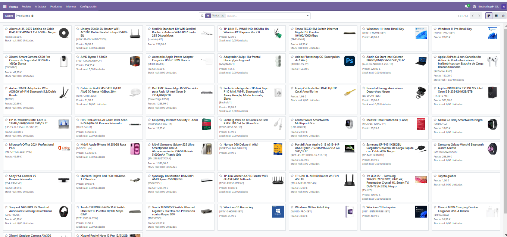

INVENTARIO: ALTA DE CATEGORÍAS Y PRODUCTOS
Tabla de Contenidos
- Creación de Categorías de Productos
- Paso 1: Acceder al Módulo de Inventario
- Paso 2: Crear Categorías de Productos
- Paso 1: Acceder al Módulo de Inventario
- Paso 2: Crear Productos y Asignarlos a Categorías
- Alta de Productos
1. Creación de Categorías de Productos
Paso 1: Acceder al Módulo de Inventario
- Accede a Odoo e inicia sesión con tu cuenta de administrador.
- En el menú principal, selecciona el módulo Inventario.
- Dentro del módulo, dirígete a Configuración y selecciona Categorías de productos.
Paso 2: Crear Categorías de Productos
- Dentro del apartado Categorías de productos, haz clic en el botón Crear.
- Introduce el nombre de la categoría y selecciona si pertenece a una categoría principal o es una subcategoría.
- Configura los ajustes necesarios, como tipo de stock y cuentas contables si aplica.
- Guarda los cambios haciendo clic en Guardar.
Lista de Categorías y Subcategorías
Se deben crear las siguientes categorías con sus respectivas subcategorías:
- Electrónica
- Auriculares
- Cargador
- Cámara
- Móviles
-
Relojes Inteligentes
-
Hardware
- Disco SSD
- Memoria RAM
- Monitor Gaming
- Procesador
-
Tarjetas gráficas
-
Portátiles
- Redes y Conectividad
- Cable Ethernet
- Router
- Servidor
- Switch
-
Tarjetas de red
-
Software y Licencias
- Antivirus
- Aplicaciones
-
Sistema Operativo Windows
-
Electricidad (Categoría sin subcategorías específicas)
Imágenes de la Creación de Categorías:
2. Creación de Productos
Paso 1: Acceder al Módulo de Inventario
- Desde el menú de Odoo, accede al módulo Inventario.
- Selecciona la opción Productos y luego haz clic en Crear.
Paso 2: Crear Productos y Asignarlos a Categorías
- Introduce el nombre del producto.
- Selecciona la categoría del producto a la que pertenece.
- Especifica detalles como:
- Código de referencia
- Precio de venta
- Cantidad en stock
- Proveedor (opcional)
- Guarda los cambios haciendo clic en Guardar.
Dar ALta de Cinco Productos
Aquí se presentan cinco productos con sus respectivas categorías:
- Categoría: Electricidad
-
TV LED 65" - Samsung TU65DU7175UXXC
- Características: UHD 4K, Procesador Crystal 4K, Smart TV, DVB-T2 (H.265), Negro.
-
Categoría: Redes y Conectividad / Cable Ethernet
-
Cable de Red RJ45 CAT8 U/FTP AWG 30
- Características: Hasta 40Gbps, 20m de longitud.
- Características: Hasta 40Gbps, 20m de longitud.
-
Categoría: Electrónica / Cámara
-
Xiaomi Outdoor Camera AW300
- Características: Cámara IP WiFi de vigilancia exterior, resolución 2K.
- Características: Cámara IP WiFi de vigilancia exterior, resolución 2K.
-
Categoría: Electrónica / Auriculares
-
Apple AirPods 4 con Cancelación Activa de Ruido
- Características: Auriculares inalámbricos con estuche de carga, reacondicionado.
- Características: Auriculares inalámbricos con estuche de carga, reacondicionado.
-
Categoría: Portátiles
- Portátil Acer Aspire 3 15 A315-44P
- Características: AMD Ryzen 7 5700U, 16GB RAM, 512GB SSD, Pantalla de 15.6".
- Características: AMD Ryzen 7 5700U, 16GB RAM, 512GB SSD, Pantalla de 15.6".
Imágenes de los Productos
